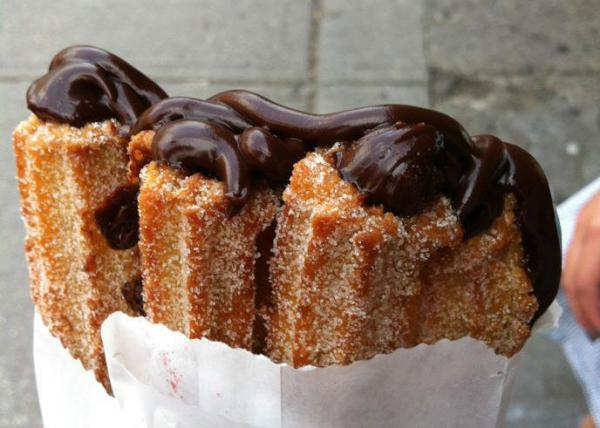
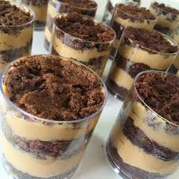

Iremos iniciar mostrando a origem de tudo. A inspiração pra criarmos esse sites e uma das maiores organizações ja vista
O mais famosos e o mais desejado, o Churros do Geds!!!
Venha saborear os mais diversos estilos e sabores dos nossos bolos também

Bolo de Morango
Bolo de Doce de Leite

Bolo de Mousse de Sensação

Bolo de Dois Amores
Estamos apenas iniciando algumas divulgações no momento, mas futuramente serão os bolos e sobremesas que você nunca irá esqueçer!!